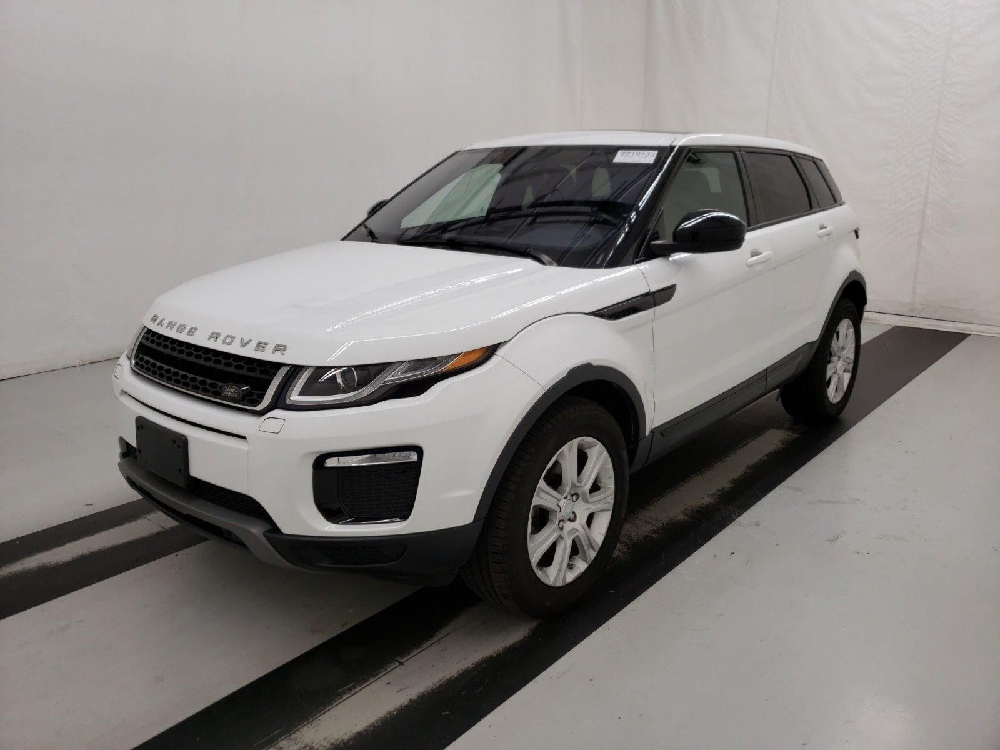

Land Rover Discovery, 3.0 L, 2014 il, 110 000 km
Land Rover Discovery, 3.0 L, 2014 il, 110 000 km
Land Rover Discovery, 3.0 L, 2014 il, 110 000 km
Land Rover Discovery, 3.0 L, 2014 il, 110 000 km
- Bakı
- Land Rover
- Discovery
- 2014
- Offroader / SUV
- Ağ
- 3.0 L
- Mühərrikin gücü:
- Yanacaq növü:
- Yürüş:
- Sürətlər qutusu:
- Ötürücü:
- Yeni:
- Barter:
- 249 a.g.
- Dizel
- 110 000 km
- Avtomat
- Tam
- Xeyr
- Mümkündür